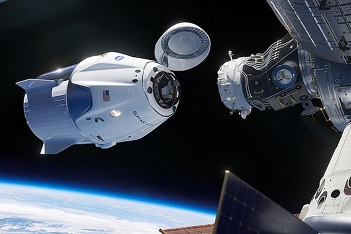

Краснее некуда
Как США и Китай в 2020 году лишали «Роскосмос» денег и последних надежд на господство
2020 год запомнился потерей почти десятилетней монополии России на доставку людей к Международной космической станции (МКС) и осуществленной Китаем первой более чем за 40 лет возвращае мой миссией с Луны. Об этих и других событиях в международной космонавтике, случившихся в уходящем году, рассказывает «Лента.ру».
Пилотируемая космонавтика
30 мая тяжелая ракета Falcon 9 с многоразовым космическим кораблем SpaceX Crew Dragon взлетела с 39-го стартового комплекса, расположенного на территории Космического центра имени Джона Фицджеральда Кеннеди во Флориде (США). На борту находились астронавты НАСА Роберт Бенкен и Дуглас Херли, ранее летавшие на американских многоразовых космических кораблях Space Shuttle и советских (российских) одноразовых «Союзах». Стыковка Crew Dragon и МКС состоялась 31 мая. На Землю Crew Dragon с теми же астронавтами успешно вернулся 2 августа — капсула космического корабля приводнилась в Мексиканском заливе, после чего была погружена на платформу Go Navigator. Таким образом США впервые с 21 июля 2011 года, когда в последний раз стартовал Space Shuttle, самостоятельно отправили людей на МКС.
В период с 2006 до 2020 года стоимость места для НАСА на космических кораблях «Союз» выросла с 21,3 миллиона до более 90 миллионов долларов. От потери монополии в доставке людей на МКС «Роскосмос» ежегодно будет недополучать около 400 миллионов долларов — примерно такая же сумма ушла у американской компании SpaceX на разработку Falcon 9, получившей многоразовую первую ступень. После того как состоится неоднократно откладываемый первый полет с экипажем еще одного американского космического корабля — Boeing Starliner, можно быть уверенным, что «Союз» станет практически не нужен НАСА даже в качестве запасного варианта.
- -Луна
- -Марс
- -Астероиды
- -Многоразовый беспилотник
- -Starlink
Ракеты
Среди проведенных в 2020 году ракетных пусков особого внимания, вероятно, заслуживают три. Первый — испытательный полет прототипа космического корабля Starship восьмой версии (SN8) компании SpaceX, состоявшийся 9 декабря на полигоне в Техасе. В воздухе изделие находилось 6 минут 40 секунд, совершило ряд маневров, в том числе практически горизонтальный полет, и поднялось на высоту 12 километров. Приземляясь, SN8 взорвался, ударившись о посадочную площадку. Причина — низкое давление в топливном баке. По информации SpaceX, испытания прошли успешно, поскольку позволили собрать все необходимые сведения о маневрировании изделия — прототипа первой в мире полностью многоразовой сверхтяжелой ракеты.